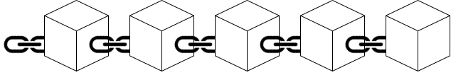
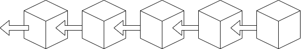
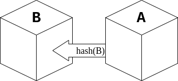
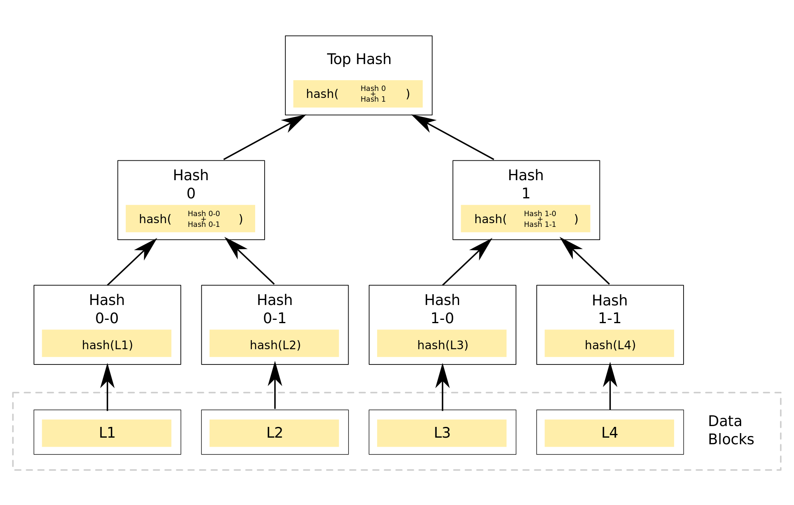

SDC - Lesson 03
1 Conenso
Ricapitolando, abbiamo una popolazione di \(p_1,p_2,...,p_n\) individui con uguale conoscenza.
Ogni individuo \(p_i\) contribuisce al consenso con una opinione, il cui valore può essere con una qualsiasi quantità \(F_i\).
In un sistema omogeneo si ha che il valore è uguale per tutti, pari quindi a una frazione \(F_i = \frac{1}{n}\).
Consideriamo un caso in cui abbiamo due pareri, il parere \(A \subseteq \left[ n \right]\) e il parere complementare \(B = \left[ n \right] \setminus A\).
In un sistema omogeneo, per far sì che l'opinione \(A\) prevelga sul complementare basta che
\[
\sum_{i \in A} F_i > \frac{1}{2}
\]
Ovvero che avevnga il cosidetto 50% + 1.
Nel sistema di consenso del bitcoin in realtà viene meno l'ipotesi di omogeneità. Il contributo al consenso dell'individuo \(p_i\) è la quantità \(F_i = \frac{z_i}{n}\) tale che \(\sum_{i \in \left[ n \right] } z_i = n\). Allo stesso modo, per far prevalere l'opinione \(A\) si necessita del 50% + 1 \[ \sum_{i \in A} F_i > \frac{n}{2} \]
2 Transazioni e blocchi
Una quantità di criptovaluta è perfettamente identificata da una coppia di chiavi pubblica/privata1.
Come già detto nella lezione 2 tutte le informazioni necessarie sono scritte in maniera immutabile in un ledger.
È ben noto che nel sistema bitcoin, il ledger è implementato tramite una blockchain. Una blockchain, come dice il nome stesso, è un database distribuito di tipo append-only2 formato da una catena di blocchi.

Dato che nella rete bitcoin ogni nodo possiede una copia locale della blockchain, si necessita che tutti i nodi acconsentano prima di
convalidare un blocco da appendere alla catena.
Ecco qua dove entra in gioco il consenso e la fiducia tra i peer.
La blockchain non è temporizzata, ovvero i blocchi non seguono un ordine strettamente temporale.
Questo perché si necesiterebbe del trust3 verso un solo nodo che scandisce un clock di riferimento,
e questo come abbiamo visto non lo vogliamo.
Percò la blockchain è ordinata, ma secondo l'ordine di convalida dei blocchi.
Infatti a un peer interessa sapere la sua transazione è la 78-esima in ordine di arrivo, non che è avvenuta
alle 18:00 del 4 Agosto 2017.
I ogni blocco sono presenti le informazioni riguardo un certo numero di transazioni. Per verificare la correttezza di un nuovo blocco prima di dare un opinione su di esso, ogni nodo deve potre verificare che tutte le transazioni al suo interno siano consistenti: ovvero che chi effettua un pagamento, possegga effettivamente una certa quantità di moneta. Per fare ciò si necessita di risalire all'indietro lungo i blocchi finchè non si verificano tutte le transazioni. Perciò ogni blocco possiede un riferimento al suo blocco precedente.

Per garantire l'immutabilità dei blocchi già convalidati si potrebbe usare l'hash4 dei blocchi come riferimento
al blocco precedente.
Ovvero, se un blocco A è il diretto successore del blocco B, allora in A è presente hash(B) come riferimento a B.
Questo garantisce se viene modificato il blocco B, e diventa il blocco B', allora il riferimento hash(B) non è più valido,
perchè hash(B) è con altissima probabilità differente da hash(B').
Periò, o bisogna modificare A scrivendo hash(B') al posto di hash(B), e di conseguenza creando la necessità di modificare
tutti i successori di A, oppure più semplicemente la catena si spezza a B.

Dato che calcolare l'output di una funzione hash è relativamente veloce, calcolare solo hash(B) per riferirsi a B
potrebbe risultare un'operazione troppo facile.
Per evitare che un nodo convalidi tantissimi blocchi in poco tempo, si necessita che la convalida di blocco sia un'operazione
relativamente impegnativa per tutti i nodi.
Si potrebbe perciò chiedere di trovare un valore, chiamiato nonce, tale che hash(nonce | B)5 è un numero con determinate proprietà
non facili tra rispettare.
Per esempio, si potrebbe chiedere che hash(nonce | B) abbia i primi 5 bit pari a 0.
In generale si potrebbe chiedere che i primi \(k\) bit siano pari a 0, scegliendo un valore di \(k\) tale che l'intera rete bitcoin riesca a convalidare
un blocco mediamente ogni 10 minuti.
Perché proprio \(k\) bit pari a 0? Perché maggiore è il numero di bit iniziali pari a 0, minore è la quantità di numeri con tale proprietà, perciò maggiore
è la difficolta necessaria per trovare un nonce valido.
Infatti, nella rete bitcoin, periodicamente la difficoltà di convalida di un blocco si autoregola, aumentando o diminuendo il numero di bit iniziali
pari a zero, a seconda della potenza di calcolo della rete al momento.
Perciò, il processo di creazione di una transazione e convalida di un blocco si può riassumere nei seguenti passi:
- Costruzione della transazione in locale Localmente costruisco la mia transazione come spiegato nella lezione 2.
- Inserimento in un blocco Appendo la transazione in blocco, oppure chiedo di appenderla a un nodo che si occupa di convalidare i blocchi (noto come nodo miner).
- Convalida del blocco Chi si occupa di convalida il blocco, controlla a ritroso nella sua copia locale della blockchain che tutte le transazioni siano consistenti. Dopodiche inizia la ricerca del nonce che rispetta le proprietà richieste al momento.
- Ricopensa Se si riesce a trovare il nonce giusto prima degli altri, il nodo in questione può prendere una ricompensa eseguendo una transazione verso se stesso, attingendo al fondo di bitcoin presente nel blocco genesi. Dopodichè può firmare il blocco con la sua chiave privata, e trasmetterlo agli altri.
Notare che, anche se un nodo trasmette un blocco malevolo, ovvero nel quale ci sono transazioni non consistenti o attingendo a premi maggiori del dovuto,
tale blocco verrà automaticamente scartato dagli altri, perdendo così di valore.
Infatti, chi riceve un nuovo blocco ne verifica a sua volta la correttezza.
In questa maniera, solo i blocchi non malevoli vengono considerati veritieri.
Se si pensa bene, in questa maniera potrebbe capitare che più miner convalidino il proprio blocco nello stesso momento, creando così delle diramazioni nella blockchain. Ciò che fanno i nodi in realtà, e cercare di unificarsi6 con le diramazioni più lunghe delle quali sono a conoscenza. In questa maniera, anche se si creano più diramazioni, vince quella più lunga, in quanto avendo più blocchi convalidati rispetto agli altri significa che dietro ci è stato un lavoro maggiore. Quindi vince sempre la catena nella quale c'è più consenso (in termini di potenza di calcolo investita).
2.1 Verifica dei blocchi - Merkle Tree
Per verificare che un blocco ricevuto sia consistente e non alterato, si ricorre ad una struttura data che consente di farlo in maniera efficiente: il Merkle Tree. Anzichè calcolare tutti gli hash della blockchain, il Merkle Tree consente di calcolarne solamente un numero logaritmico. Sostanzialmente, nei nodi foglia dell'albero sono presenti gli hash dei blocchi della blockchain. Nei nodi foglia invece è presente l'hash dei nodi figli.

Figura 4: Esempio di Merkle Tree